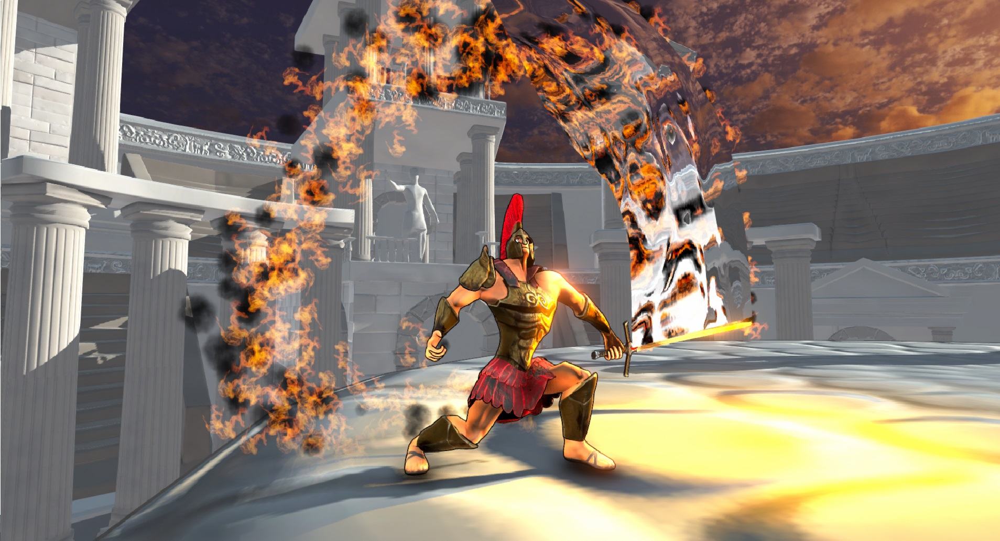

Andor
{kind=link}
Brash, agressive and maniacle, Andor, Master of the sword, was the only one Ajax deemed capable of wielding his imbued sword. One of the strongest men to ever survive the fighting pits, Andor worked his way up to General of the Royal Forces. Once Typhos began his decent into war, Andor broke free of his vows, to seek seek to defeat the Elemental Incarnation Quake which devestated the capital city.
Flames
Certain moves activate Andor's enchanted sword, igniting it. Attacks that hit with the ignited sword deal additional hitstun. The only way to achieve this with aerial attacks is by canceling his Side Special into aerial attacks.

Leap Slash
Andor leaps forward in the target direction, flipping forward twice. Andor can use any aerial attack to immediately cancel the Leap Slash.

Counter Flame
Andor assumes a defensive stance. If attacked, andor lashes out in a wild circular swing around his body, knocking back any enemies near and absoring the attack.

Flame Charge
Andor hunkers down, power up his sword. After releasing the special button or reaching maximum charge, Andor spins wildly, unleashing all the stored energy in a devestating attack.

Flaming Rise
Andor leaps while striking swiftly upwards. While not dealing that much damage, granting Andor significant height to recover
Perhaps the flashiest of Melee Master's Ultimates, Andor embues his sword with his fury. Any attack that uses the sword now sends out a flaming projectile which carries with it the knockback and damage of the attack that summoned it. allowing andor to edgeguard from extreme range or juggle from ground level.
While slow, Andor posesses devestating attacks. With high knockback and hitstun, Andor functions optimally at low-medium health levels (20-60). At these ranges, most of his attacks knock down, and those that don't set up for even bigger combos. His smashes are equally devestating, with a fairly quick wind up, these can be used to finish off enemies early, or start combos at low health. Additionally, Andor's smashes are further enriched by use of his ultimate, making them excellent zoning and edgeguarding tools that pack a punch when they hit. Andor can be punished fairly easily when enemies are are low health levels, his moves start up pretty quickly, but have a lot of lag afterwords. Try to land grabs early on to gain an early health advantage which enables the rest of his combos.